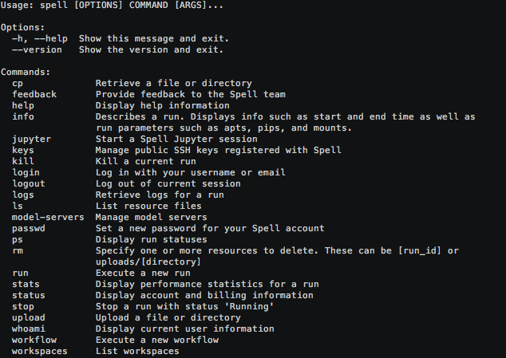
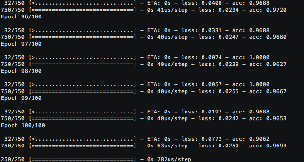
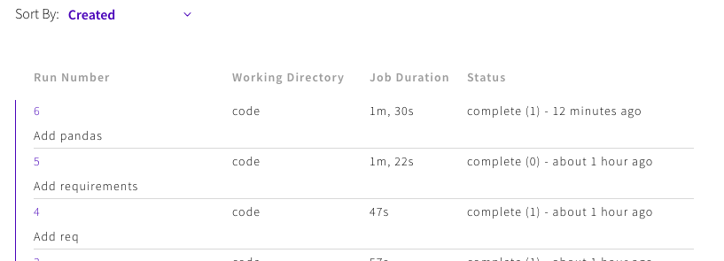
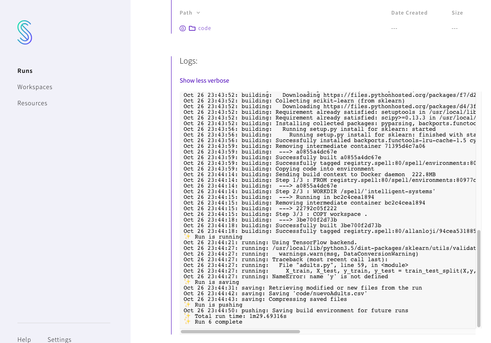

Spell es una línea de comandos y una interfaz web para enviar experimentos a la nube con un solo comando.
No hay nuevos frameworks para aprender y casi cualquier tipo de entorno de desarrollo es compatible.
Este tutorial enseña a configurar Spell y a poder subir un modelo de Machine Learning en python que queramos probar.
Spell
pip install spell
Verifica que tengas instalado spell correctamente con el comando
spell
Deberías ver información como la siguiente:

Accede con tus credenciales
spell login
Puedes ver la información de tu usuario con el comando:
spell whoiam
spell run python archivo.py
¿Pero qué pasa si en nuestro codigo necesitamos librerías?
Spell cuenta con TensorFlow instalado pero si es necesario utilizar otra librería podemos agregar a nuestro código de run la librería de pip:
spell run python archivo.py --pip <nombre_libreria>
import numpy as np
from sklearn.datasets import make_moons
from sklearn.model_selection import train_test_split
import matplotlib.pyplot as plt
import tensorflow as tf
from tensorflow.contrib.layers import fully_connected
#Creación de los datos usando make_moons
np.random.seed(0)
X, Y = make_moons(1000, noise=0.2)
# División de los datos usando train_test_split
X_train, X_test, Y_train, Y_test = train_test_split(X, Y, test_size=0.25, random_state=73)
# # Revisa el valor de las siguientes variables:
# Definición de la estructura de la red:
nInputRows = X_train.shape[0] # cuantos renglones
nInputsColumns = X_train.shape[1] #cuantas columnas
# Capa
nHiddenNeurons = 4 # número de neuronas
nOutputs = 1 # número de salidas, binario
def plot_decision_boundary(model, X, y):
padding = 0.15
res = 0.01
# max and min values of x and y of the dataset
x_min, x_max = X[:, 0].min(), X[:, 0].max()
y_min, y_max = X[:, 1].min(), X[:, 1].max()
# range of x's and y's
x_range = x_max - x_min
y_range = y_max - y_min
# add padding to the ranges
x_min -= x_range * padding
y_min -= y_range * padding
x_max += x_range * padding
y_max += y_range * padding
# create a meshgrid of points with the above ranges
xx, yy = np.meshgrid(np.arange(x_min, x_max, res), np.arange(y_min, y_max, res))
# use model to predict class at each point on the grid
# ravel turns the 2d arrays into vectors
# c_ concatenates the vectors to create one long vector on which to perform prediction
# finally the vector of prediction is reshaped to the original data shape.
Z = model.predict(np.c_[xx.ravel(), yy.ravel()])
Z = Z.reshape(xx.shape)
# plot the contours on the grid
plt.figure(figsize=(8, 6))
cs = plt.contourf(xx, yy, Z, cmap=plt.cm.Spectral)
# plot the original data and labels
plt.scatter(X[:, 0], X[:, 1], s=35, c=y, cmap=plt.cm.Spectral)
plt.show()
# función para obtener el costo del modelo al ejecutarlo n número de iteraciones
def getTrainCost(model, n_iters=1000):
model.sess.run(tf.global_variables_initializer())
cost = []
for i in range(n_iters):
cost.append(model.train())
return cost
from keras.models import Sequential
from keras.layers import Dense
from keras.initializers import glorot_normal
n_iters = 10000
for i in [5,10,50,100]:
nHiddenNeurons = i
print("%d Neuronas" % i)
modelo = Sequential()
#Capa de entrada
modelo.add(Dense(nHiddenNeurons, input_dim = X.shape[1], activation= 'elu',
kernel_initializer=glorot_normal(seed=0)))
#Capa oculta
modelo.add(Dense(nHiddenNeurons, activation= 'elu',
kernel_initializer=glorot_normal(seed=0)))
modelo.add(Dense(nHiddenNeurons, activation='elu',
kernel_initializer=glorot_normal(seed=0)))
modelo.add(Dense(nHiddenNeurons, activation='elu',
kernel_initializer=glorot_normal(seed=0)))
modelo.add(Dense(nHiddenNeurons, activation='elu',
kernel_initializer=glorot_normal(seed=0)))
modelo.add(Dense(1, activation='sigmoid',
kernel_initializer= glorot_normal(seed=0)))
#Capa salida
modelo.compile(loss="mean_squared_error", optimizer='adam', metrics=["accuracy"])
train = modelo.fit(X_train, Y_train, epochs=100)
results = modelo.evaluate(X_test, Y_test, batch_size=len(Y_test))
print(results)
plot_decision_boundary(modelo, X,Y)
Para poder correrlo es necesario crear un archivo requirements.txt En él listaremos las librerías necesarias para poder ejecutar nuestro archivo python.
numpy
sklearn
matplotlib
Podemos detallar versiones específicas o bien considerar versiones actualizadas
numpy == 15.0.0
sklearn >= 0.20
matplotlib
Para correr el programa con las nuevas librerías escribimos el comando:
spell run python archivo.py --pip-req TEXT
Al finalizar podremos ver los resultados:

Podemos ver el registro de nuestros runs desde el portal de Web en la sección de runs
Podemos ver las veces que se ejecutó

Así como los resultados de consola
